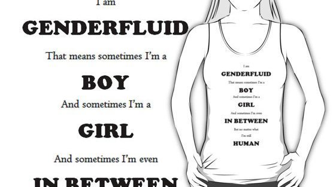
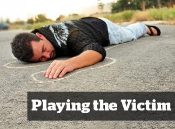
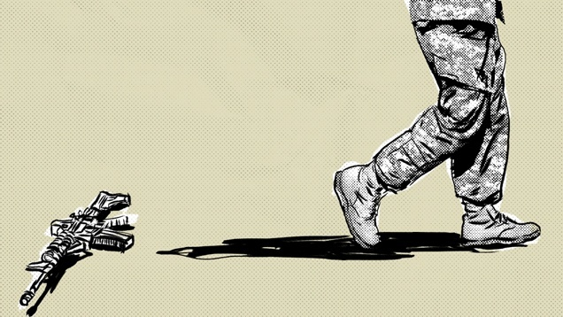
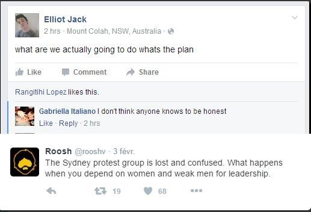

< < < Back
6 Attributes That Make SJWs Useless Soldiers In The Culture War – Return Of Kings
The Janissaries were an infantry unit serving the Ottoman Empire for about 400 years, known for their efficiency but also for their systematic atrocities committed on civilians. They were not Turks like the bulk of the army, but rather Orthodox Christian boys from the nations under the Ottoman yoke.
Abducted at a young age in accordance with a practice called the “Devşirme” or “blood tribute,” they were converted to Islam by force, circumcised, beaten daily to break all will, and taught to be the fighting slaves of the Sultan. Mercenaries with no roots, no individuality, and no remorse.
The SJWs that went out of their way to attack our cause based on lies, are also the product of a virgin mind, beaten into submission by the elites, the media, and their politically correct stick. They have been brainwashed from a young age and led astray from a loving family and values, but instead of elite soldiers the result is a legion of lost, deformed beasts. Even if they beg and roll over for the approval of their masters, severe flaws will prevent them from reaching any success:
1. Their malevolence against their own
They could have been our brothers but chose the easier path and the take-away version of life, mainly from apathy and fear of the world. And now in a mix of tantrums and faux outrage, they want to see blood but won’t swing the sword themselves. They will turn on their own flesh, roots and even fellow Janissaries in an eyeblink, faster than any foreign foot soldier could.
Loyalty is a foreign word and integrity is too tedious. Whoring for few clicks and likes is much more attractive. They won’t bite the invisible hand that feeds them but by God, will they scorch the earth that saw them grow. The real enemy is safe under the guise of “equality” but fathers and brothers will hang for the satisfaction of their new lords. If they cannot reach happiness, why should the others?
2. Their absence of identity

They have no idea of who they are or the endgame of their leaders. Doing as they are told, The SJW is always friendly about something, fluctuating between “genders,” blending in the mass or denying the laws of Nature, his own and the one of the world that surrounds him. The SJW is confused, triggered, and fragile. The atom of an undetermined blob, there lies the SJW, epitome of the Jack of all trades, master of fuck all.
We know who we stand against and what we want to protect. Ask any of us who we are, we can condense it in a short sentence. Free men. We can say that Bruce Jenner is not a woman because it is fact. It is a man and an abomination that children would laugh at in any country outside of the Anglosphere. We will gather and say what we please because we are free and that is what free men do.
3. Their eternal laziness
Merit and hard work are unknown notions. They are Anonymous and they are legion. Yes, they are indeed. A legion who would rather stay in the dark and conform. This is the problem with the mindset of the hive. Like the bee, they have a task and stick to it. They won’t seize what can be theirs like men but always choose the path of least resistance. They will wither, crippled with regrets while waiting for a pat in the back by some stranger on an Internet forum.
Our names will echo in History as we create a legacy that will be strong. Their failure in life will lead to an existence of solitude and their memory will be scattered in the wind like the autumn leaves.
4. Their abysmal lack of courage

As weak in body as they are in will, they would not dare rebel against their master and they join the witch-hunt by fear of standing out or by plain stupidity. Victims they are, victims they will remain. Today, we see them for who they are. Hidden, spitting their venom and breaking out a cold sweat at the sight of a handful of guys that organize a happy hour.
Men that could bitch slap them into unconsciousness but chose not to, as they know what is the law and have better things to do than striking stick figures. Both sides know that at the first sign of difficulty, SJWs will raise the white flag and will surrender. They threaten and want us to turn away from our faith and bow to the golden calf? We will not.
5. Their known ancestry

Men are never completely satisfied. We are always hungry for success, for truth, for improvement or for adventure. It is part of the gig.
Thriving in incompetence and normality, detractors like them have always been there but have been dormant until recently. The leeches on the back of lions, the informers and the collaborating remoras.
The ones drinking champagne far from the line while the boys were getting gassed in Ypres. The beta orbiters hoping to get some action, saying to young Lucy that she should not write to her fascist boyfriend Eddy while he was getting his guts blown up somewhere in the elephant grass near the Cambodian border.
We know those types well and know how to deal with them accordingly.
6. Their inability to lead

Lo and behold, our “adversaries”
Our unity and common goals are our strength but if we happen to be isolated, we know what to do. We understand that eventually we cannot count on anyone but ourselves. We are the ones that say “No” and contrary to the Janissaries that infiltrated our lands, we know the mountains where to strike from like the back of our hand. Those mountains have a name. The real life.
Snickering behind their screen, thinking they can defeat us because a fellow land whale empowered mayor retweeted their obscenities or JohnJenny Doe 87 started an online petition, all hell breaks lose and the panic is total when the Control Tower stops broadcasting.
They have an expiry date and will meet the same end as the Janissaries of old:
Janissaries mutinied in protest and were promptly and efficiently massacred by the sultan, an episode known as the “Auspicious Incident.” – Encyclopaedia Britannica
They are just another set of pawns. Once their incompetence reaches the point of no return or when they are of no more use, the puppeteer will pull the plug.
Conclusion
Our minds have woken up contrary to the horde and our bodies have been forged in the fires of adversity and the knowledge that we have to prevail in this unforgiving world. We have fought and defeated men before but being only a feeble simulacrum of men, we will use an other method to bring them to their end.
It is too late for a status quo. The culture war is here and the truth will prevail.
Rise, free men.
Read More: Have SJWs Gone Too Far By Defending A Known Pedophile?